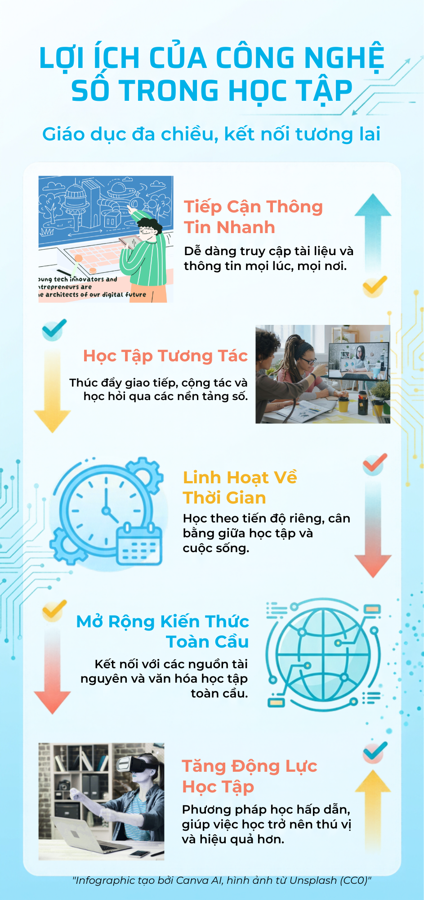

Infographic
Hình ảnh minh họa của bài thực hành

Lab 05 · Multimedia
Khám phá infographic Lab 05 và xem video hướng dẫn được nhúng trực tiếp từ YouTube.
Hình ảnh minh họa của bài thực hành

Nội dung video được nhúng trực tiếp trên trang
Để phát video nhúng, hãy mở trang qua HTTP (ví dụ: dùng tiện ích Live Server trong VS Code), không mở trực tiếp tệp bằng file://. Nếu vẫn không xem được, mở video trên YouTube.